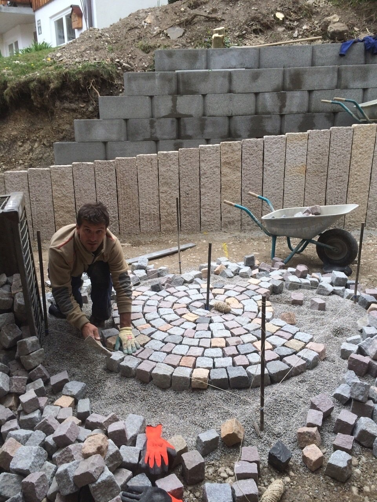

Stein für Stein. Von Hand gesetzt.
Einfahrten, Terrassen, Mauern und Treppen aus Naturstein. Muharem Sopa und sein Team bauen sie so, dass sie Jahrzehnte halten.
- Seit 2013 eigene Firma
- 30 Jahre am Bau
- Beratung vor Ort kostenlos

Jeder Stein einzeln gesetzt, nach Schnur und Augenmaß.


Alles rund um Ihren Außenbereich.
Von der ersten Baggerschaufel bis zum letzten Stein. Für Privatgärten, Wohnanlagen und Gewerbe. Sie haben einen Ansprechpartner für alles.
 01
01
Naturstein-Pflaster
Bogenpflaster, Kleinpflaster, Mosaik. Für Einfahrten, Höfe und Plätze.
 02
02
Stein- und Trockenmauern
Hänge abfangen, Grenzen ziehen, Beete fassen.
 03
03
Treppen
Auch im steilen Gelände.
 04
04
Terrassen und Wege
Polygonalplatten, Palisaden, Randsteine.
 05
05
Erd- und Baggerarbeiten
Inklusive Entsorgung.
 06
06
Bepflanzung, Zäune, Rasen
Damit der Garten fertig wird.
Noch nicht sicher, was Sie brauchen?
Klicken Sie sich in einer Minute durch: Was soll gebaut werden, wie groß, welcher Stein. Herr Sopa meldet sich dann mit einem Termin für die kostenlose Beratung vor Ort.
Planen Sie Ihr Projekt. Wir legen schon mal los.
Ein paar Klicks, keine Pflichtangaben außer Name und Telefon. Rechts sehen Sie live, wie Ihre Fläche gepflastert wird. Am Ende geht alles als fertige Nachricht an Herrn Sopa.
Keine Musterbilder. Alles selbst gebaut.
Echte Baustellen aus dem Allgäu, fotografiert von Herrn Sopa und seinem Team. Tippen Sie ein Bild an, um es groß zu sehen.

Gartenbauer aus Leidenschaft.
2013 hat Muharem Sopa seine eigene Gartenbaufirma gegründet. Vorher hat er viele Jahre im Tiefbau, Straßenbau und Gartenbau gearbeitet, zusammen 30 Jahre am Bau.
Wir arbeiten zügig, achten auf jedes Detail und sind erst zufrieden, wenn Sie es sind.
Das Team
- Muharem SopaGeschäftsführer
- Nevzat SopaGartenbau-Fachwerker
Erst schauen wir uns alles bei Ihnen an.
So wissen Sie vorher, was es kostet. Und wir wissen genau, was Ihr Garten braucht.
Anfragen
Projekt-Planer ausfüllen, anrufen oder eine E-Mail schreiben.
- kostenlos
Termin vor Ort
Herr Sopa kommt zu Ihnen und bespricht Ihre Vorstellungen direkt auf dem Grundstück.
Kostenvoranschlag
Sie bekommen schriftlich, was gemacht wird und was es kostet.
Bauen
Zügig und sauber. Material, das übrig bleibt, nehmen wir mit.
Erzählen Sie uns von Ihrem Projekt.
Am schnellsten geht es am Telefon. Oder Sie planen Ihr Projekt in einer Minute, und Herr Sopa meldet sich bei Ihnen.